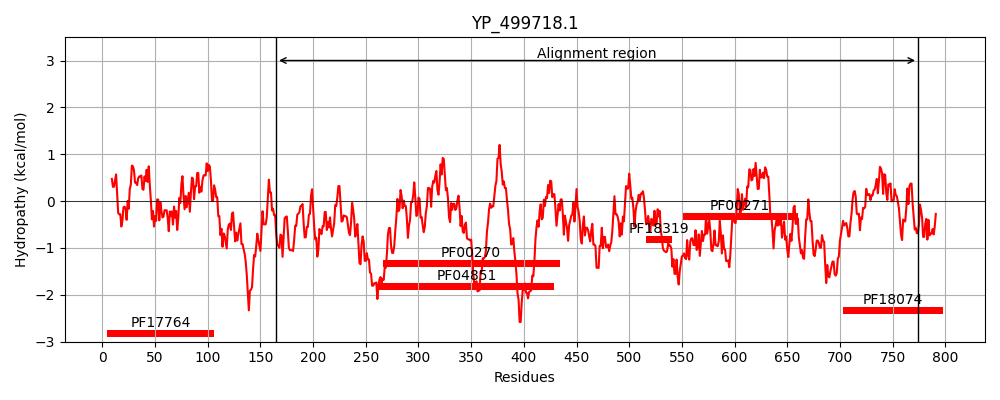
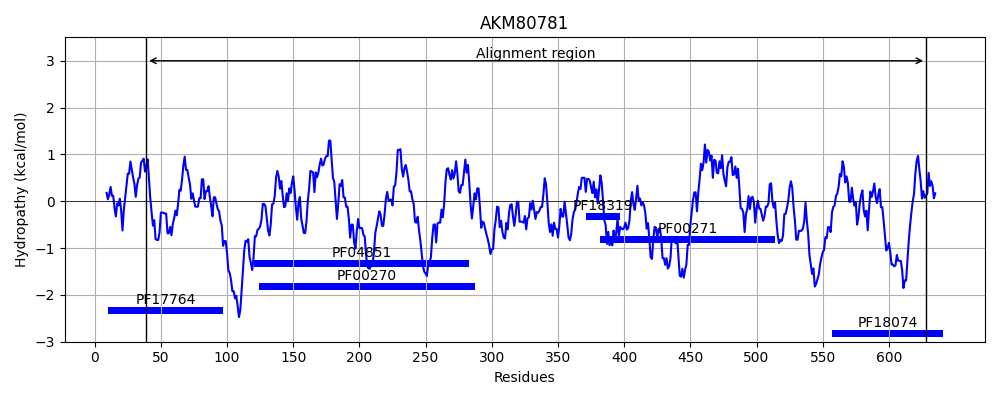
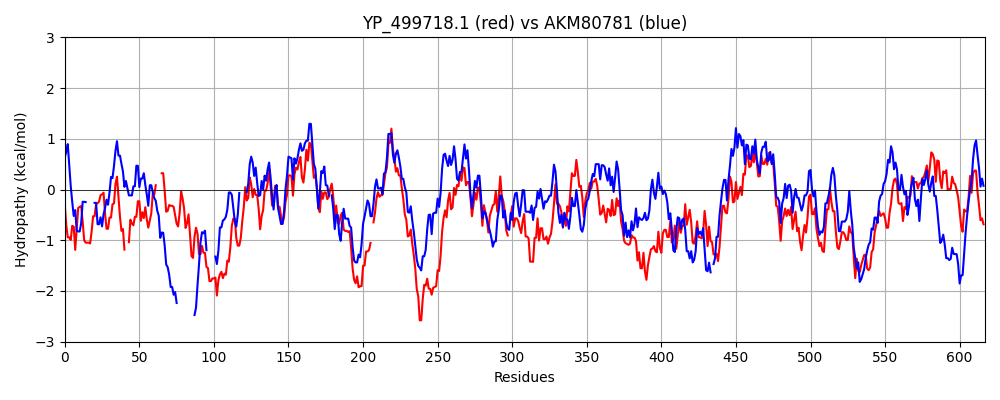

Hit Accession: AKM80781
Hit TCID: 3.A.11.1.5
Hit Description: gnl|BL_ORD_ID|1287 gnl|TC-DB|AKM80781.1|3.A.11.1.5 hypothetical protein UW38_C0001G0951 [Candidatus Saccharibacteria bacterium GW2011_GWC2_44_17]
Mach Len: 617
e:0.000000
Query TMS Count : 0
Hit TMS Count: 0
TMS-Overlap Score: 0.000000
Predicted Substrates:None
BLAST Alignment:
Score: 886 , Bit scores: 345 bits, E-value: 1.3e-108, Alignment length: 617, Percentage identity: 34
Query: 165 KTILTQNITKKTKRAVRVIEGYHPDEVLAKLEKVIKQYDLY--AYLSEEQHKTIFLTDIEDM---GFSKSSLDGLIKKGYVEKYDAVVERDPFKDRVFEQESKQQLTEDQYKAYEAIKAKIVSQEQETFLLHGVTGSGKTEVYLQTIEDVLSQGKQAMMLVPEIALTPQMVLRFKRRFGDDVAVLHSGLSNGERYDEWQKIRDGRA-RVSVGARSSVFAPFKNLGLIIIDEEHESTYKQEDYPRYHAREIAQWRSEYHHCPVILGSATPCLESYARAEKGVYHLLSLPNRVNQQALPE-IDIVDMREELSEGNRSMFSKDLREAIQLRLDRQEQVVLFLNRRGYASFMLCRDCGYVPQCPNCDISLTYHKTTDLLKCHYCGYQETPPNQCPNCESEHIRQVGTGTQKVEELLQQEFEDARIIRMDVDTTSKKGAHEKLLTEFEKGNGDILLGTQMIAKGLDYPNITLVGVLNADTMLNLPDFRASERTYQLLTQVAGRAGRHEKAGQVIIQTYNPDHYSILDVQKNDYLTFYRQEMEYRKLGKYPPYYYLINFTISHKEMKKVMVASQHVHKILLQHLTEKALVLGPSPAALARINNEFRFQILVKYKSEPGLLQAI 774
K LT IT TK+ Y +L+ +E +L A+ +E + + T ++ + G K+ D L R+ +DR + LT+DQ+ A +A++ S + L+HGVTGSGKT +Y++ + L++ + ++LVPEIALT Q+V F F +++ ++HS + ER+ WQ + ++ RV +G RS++F P +LGLI+IDE HE ++KQE PRY A A + H +ILGSATP + Y A + +++LP R + A P I +VDM ++ S + S L ++ R +QV++F NRRG AS LC +CG+ CP C I LT H L+CH CG E P CP C S I G GT+ +E L++ + I+R D D S E + G DI++GTQ+IAKGLD P + LVGV+ AD L LPD+ +SERT+QLL QV GR GR V++Q+Y P+H ++ +Y FY ++ R+ +PP+ YL+ T +K + ++ + L + +LGP+P+ R + +R+Q+++K L+ A+
Sbjct: 39 KKQLTGIITSATKKP-----SYETKSILSTIETAPLPTELIKLAFWLKEYYNSPLATVLQTLLPRGLQKNRRDRLS-----------THRESLRDR-----TTIVLTKDQHDAVQAVE----SMTPGSALVHGVTGSGKTHIYIELAKHTLARNQSVIILVPEIALTSQVVDEFSHHF-ENIILVHSRQTEAERHLAWQDALNSKSPRVVIGPRSALFTPLHHLGLIVIDEAHEPSFKQEQSPRYSALRAASVLTRLHDAKLILGSATPLVTDYYLAAQSDRPIITLPERAKKDATPPTITLVDMTKKASFTHHRFLSNTLLSELEASFSRGDQVLIFHNRRGSASTTLCENCGWSATCPQCFIPLTLHADAHHLRCHLCGRNEKVPTSCPTCHSADIIHKGIGTKLIESELRKRYPHKVIVRFDGDNESGDTV-ESRYNDLYSGAIDIIIGTQVIAKGLDLPKLRLVGVIQADAGLALPDYTSSERTFQLLAQVVGRVGRSHHPTTVVVQSYQPNHLAVTTGLAQNYEQFYETTIDERRRANFPPFTYLLKLTCIYKTEIAAIKNAKKLATELRAACPQSVQILGPTPSFYERQRDTYRWQLVLKSPRRADLVAAL 628 | Protein Hydropathy Plots: |
|---|
|  |  |
Pairwise Alignment-Hydropathy Plot:
|
|---|
|  |